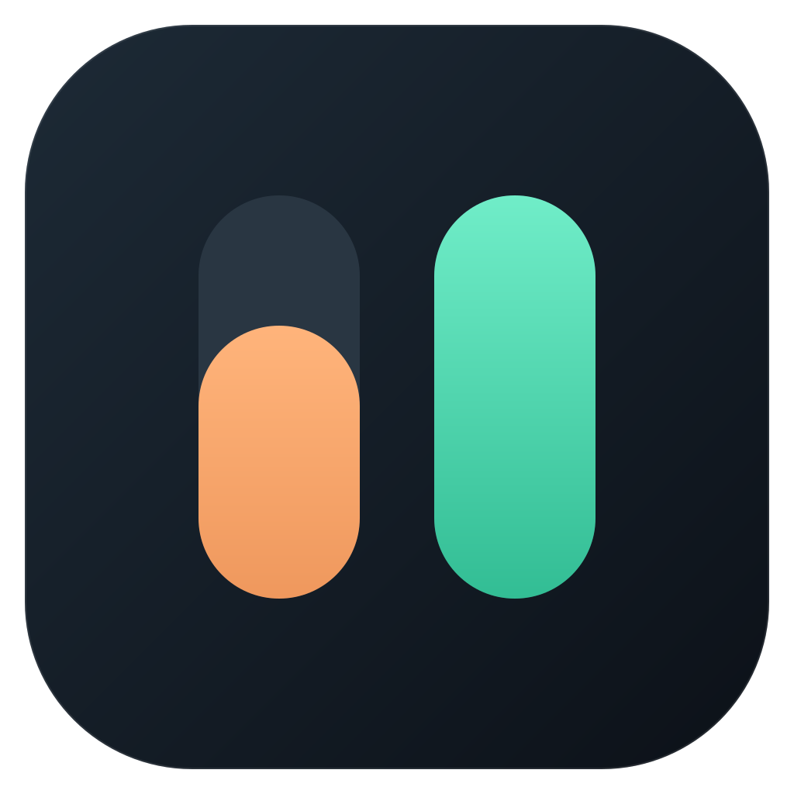

<!doctype html><html lang="pt-BR"><meta charset="utf-8"><meta name="viewport" content="width=device-width,initial-scale=1"><title>Consumo de IA</title>
<style>body{margin:0;background:#0c1118;color:#ecf0f5;font:16px system-ui;display:grid;place-items:center;min-height:100vh}main{max-width:520px;padding:32px}h1{font-size:36px}p{color:#aab7c8;line-height:1.6}button{background:#45d6aa;border:0;border-radius:8px;padding:12px 20px;font:inherit;cursor:pointer}</style>
<main><h1>Seu consumo de IA<span style="color:#45d6aa">.</span></h1><p id="status" role="status">Iniciando seu painel…</p><button id="retry" hidden>Tentar novamente</button></main>
<script>
const status=document.getElementById('status'),retry=document.getElementById('retry');
async function start(){retry.hidden=true;status.textContent='Iniciando seu painel…';try{const url=await window.__TAURI__.core.invoke('start_engine');location.replace(url+'widget?native=1');}catch(e){status.textContent=String(e);retry.hidden=false;}}
retry.addEventListener('click',start);start();
</script></html>
